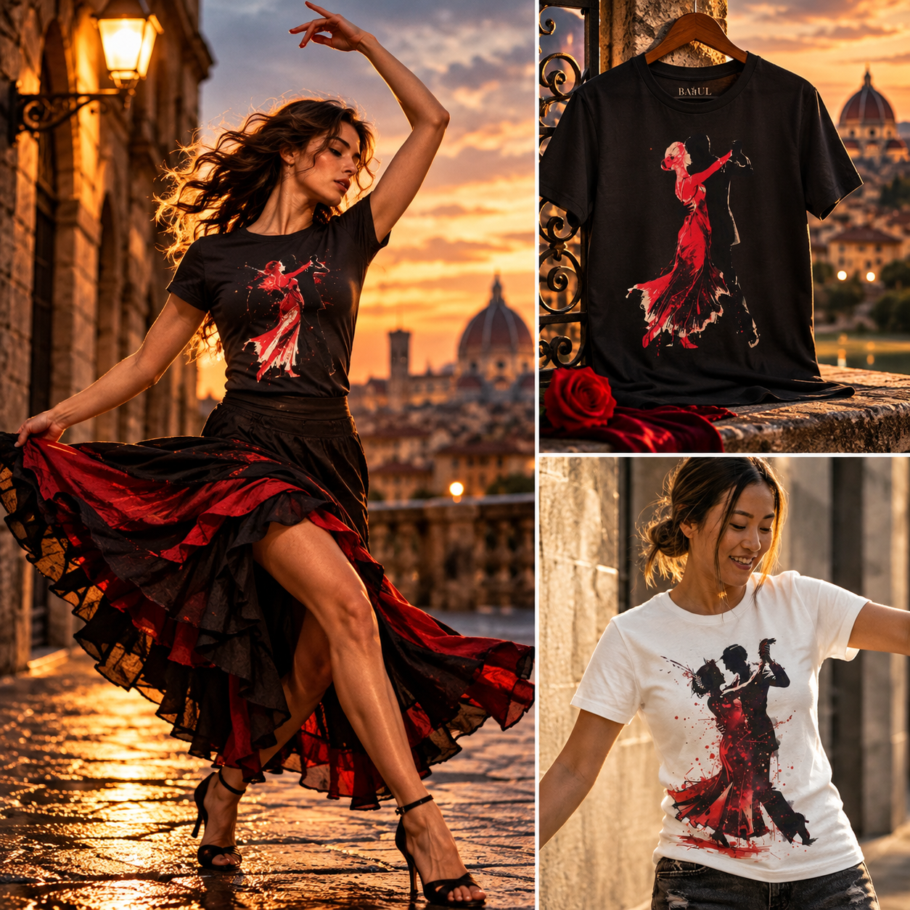

Follow the curiosity
From Oni masks and Irezumi to tarot, astrology, and cosmic pins, BABUL collections wander across art, symbolism, and everyday life.
About the art
BABUL is a home for original artist-designed wearable art—where Japanese-inspired graphics, esoteric symbols, mindful movement, and a little visual philosophy share the same wardrobe.
Explore the collections
MIDNIGHT TANGOThe BABUL point of view
From Oni masks and Irezumi to tarot, astrology, and cosmic pins, BABUL collections wander across art, symbolism, and everyday life.
Original graphic art finds a place on T-shirts, heavyweight hoodies, expressive sweatshirts, and small accessories.
Each piece is made to order on ultra-soft, ring-spun cotton, with high-definition printing built to last.
The universe, in detail
At BABUL, clothes are a canvas for ideas. A graphic T-shirt can carry a symbol, a mood, or a small story into the everyday. Culture, symbolism, movement, and contemporary life meet here—not in one fixed look, but across a collection of visual worlds that leave room for your own interpretation.
One design might draw you toward a mythic figure; another, a city glowing after dark, an abstract gesture in motion, or the humor tucked into an ordinary ritual. Explore by image, by feeling, or by the question a design leaves with you. Every collection opens another door into wearable art with an idea at its center.
Japanese visual references run through THE WARRIOR’S SHADOW, Bold Oni Mask, and Eternal Ink: The Irezumi Collection. NEO-BUSHIDO imagines samurai symbolism in a cyberpunk future, while The Ink & Steel Series looks to Neo-Traditional tattoo art. These collections move between familiar symbols and contemporary settings, turning cultural references into bold graphic streetwear.
Fluid Form Tai Chi draws on flow and balance. The Miró Flow Yoga collection turns yoga into expressive, abstract graphics, and Midnight Tango brings dance, art, and the rhythm of the streets into an after-dark mood. Here, movement is both subject and feeling: a moment of focus, a sweeping line, a pulse that follows you into the day.
ArcanaPop, Tarot in Ukiyo-e Style, I Ching, and Dreamy and Gothic Zodiac explore cards, symbols, and celestial themes. Catlosophy, Doglosophy, Fishlosophy, and CoffeeTherapy bring a lighter, witty perspective to art and everyday life. Across graphic T-shirts, hoodies, and Cosmic Art Pins, BABUL shifts from bold statements to small details—like abstract cosmic imagery you can pin to a jacket or bag.
Wear the idea. Carry it your way.
Your next favorite piece is out there